meFit: A Product design journey

Project overview
With the internet and social media, we now have access to so much information, which sometimes leads to distractions and herd goals. We all want to try that cheese dripping pizza from that Instagram #foodporn post and still maintain that #fitspiration physique! We want to join that #5AMClub (this some!) and #party all night with friends!
All of us want to become healthy and fit but we either do not get enough time or we lack the motivation to achieve this desire of ours.
In this project, we explored how users lifestyle is affecting their fitness levels and how can we improve that.
Fun fact : Uganda and Finland are the world’s fittest countries. And for them, being fit isn’t the choice but a condition of necessity! They tend to integrate movement into their daily life and chores!
Not-so-fun fact : In 2016, around 13% of the world’s adult population were obese. And now, at the end of 2019 this has increased to 30% and counting.
Role
- Product design, user research(Quantitative)
- Divided into team of 5 that included people of different backgrounds like finance, engineering & management
- Duration: 7 sessions (~5 hours each on weekends)
Process
The challenge
The fitness experience in today’s available solutions lacks a combination of motivation -> goal setting -> competing -> tracking
Most of the solutions today either track your steps or train you for muscle builds or only make you aware of the diet plans that are available.
The solution
With meFit, we are aiming at combining all to provide a better experience to the user.
For your fitness journey, you need self-regulated learning activities like setting goals, goal oriented diet plans and reviewing your day-to-day progress.
Discover
Assumptions
We looked up on web and talked to people to get more knowledge about the fitness industry and what people are currently doing to be fit. The finding are listed below:
- Fitness normally pertains to physical appearance.
- People do not take stress/ depression/ anxiety seriously and mostly are not even aware.
- People normally take fitness as either weight-loss or muscle-up.
- People may not be aware of better lifestyle practices.
Research
To validate these assumptions and to understand the idea of fitness for the users we went into the research phase.
-
To have a better understanding of our target users habits and lifestyle. We were able to survey around 71 people to:
- Learn about the user’s background; help in creating a customized solution.
- Know more about that specific gender; how their habits are and how much time is devoted by them to health.
- Understand the micro habits of the user related to his/her health.
- Understand the current awareness of the user related to his/her health.
- Understand the exact problem a user’s faces.
- Understand how they currently tackle these problems.
- About 80–90% people spend more than 2.5 hours in their office commute, thereby very little time for themselves.
- People are somewhat aware of digital products available
- People use various resources to keep a check on their health
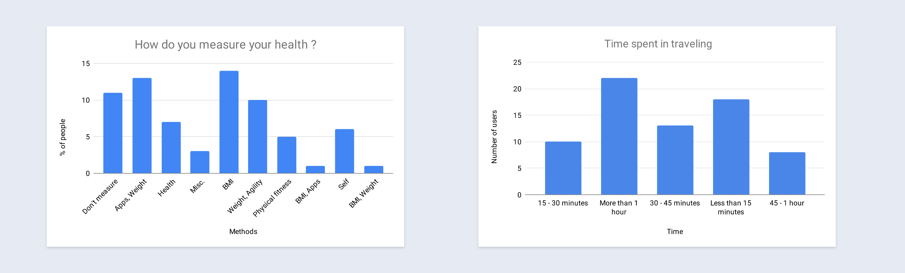 -
Dive deeper into users habits and lifestyle regarding fitness/healthy living:
- What are the things you do to remain healthy?
- What does your typical day look like?
- Do you ever measure your health details? If yes, how?
- How do you educate yourself about a healthy lifestyle?
- What major or minor challenges do you face related to your health?
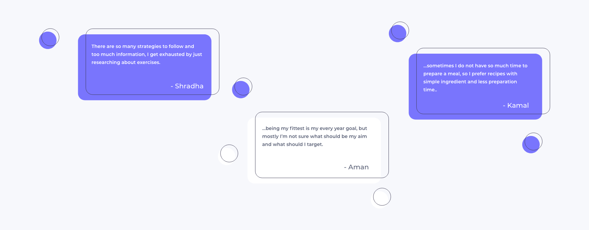
Insights
We realized that some of our initial assumptions were correct. Some more details that we were able to figure through this survey:
- With regard to healthy habits, people primarily focused on food habits and keeping themselves active.
- Users faced health issues like back pain, weight gain, etc and mostly they used home remedies or changes in their lifestyle.
- Also, we found out that most of the users still have issues in finding time for their health.
- Most users didn’t read anything on the internet, so there was a lack of awareness.
- To manage the stress they did whatever that made them happy like cooking, listening to music, or playing games.
- The most common challenges faced by the users was related to their weight and having low stamina. They ate healthy food and did some sort of physical activity, workout or exercise to tackle issues faced by them
- Fitness normally pertains to physical appearance.
- Fitness goals are generally assumed as weight-loss or muscle-up.
- Mental ailments like stress/depression/anxiety are not taken seriously and sometimes even considered a taboo.
- Lack of time to track health.
- Lack of one-stop solution.
- To view fitness as a wholesome lifestyle result.
- People may not be aware of better lifestyle practices.
- Fitness normally pertains to physical appearance.
- Fitness goals are generally assumed as weight-loss or muscle-up.
- Lack of time to track health.
- Lack of a one-stop solution.
- People may not be aware of better lifestyle practices.
Define
Problem Statement
“How to help young professionals and students stay healthy while making their lifestyle better!”
The research found that to take care of your body as a whole is very much tedious, stressful and lack one-stop solution. So how can we help enhance this experience with lifestyle, the thing that is already built in their behavior? We listed some use cases for the same:
- How can I measure my health details?
- How can I be updated on fitness?
- How can I remain motivated towards my health?
- How can I track my calorie intake?
- How can I get healthy recipes?
- How can I increase my stamina?
- How can I figure out a diet plan?
User stories & KPI’s
The product would be measured on the basis of these Key Indicators-
Lightning Demo
“nice examples of other products in other industries that solve problems we’re working to solve”
- 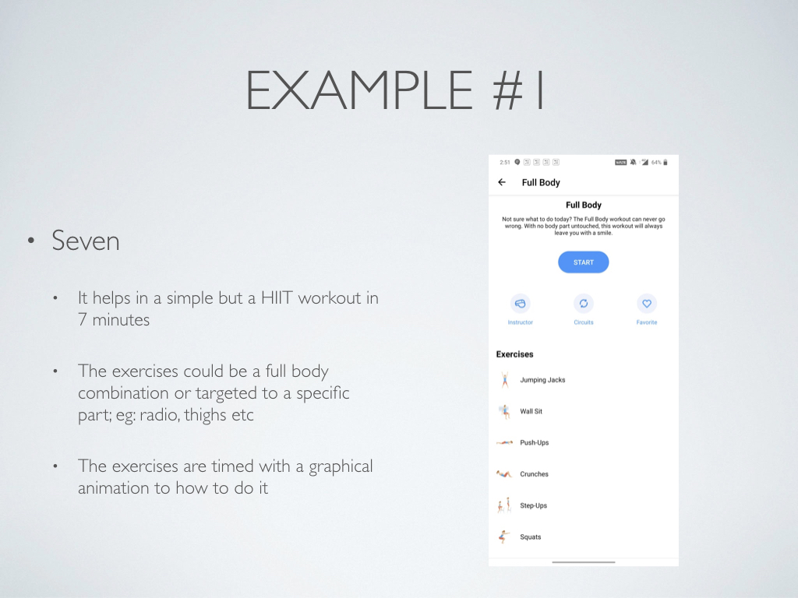
- 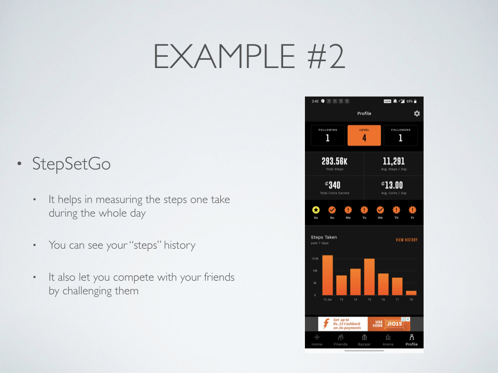
- 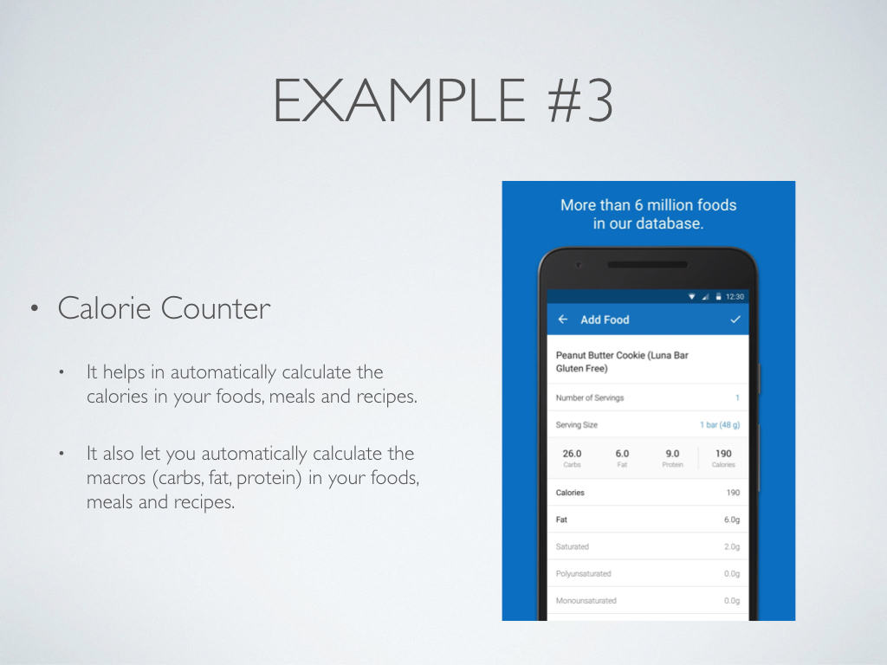
- 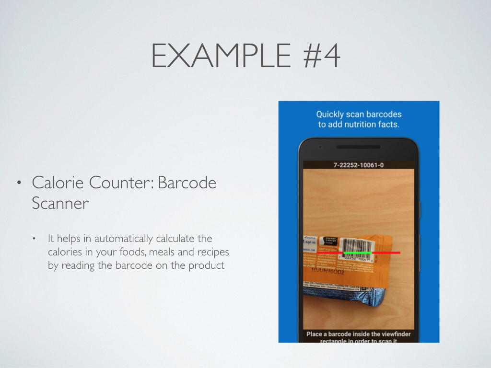
- 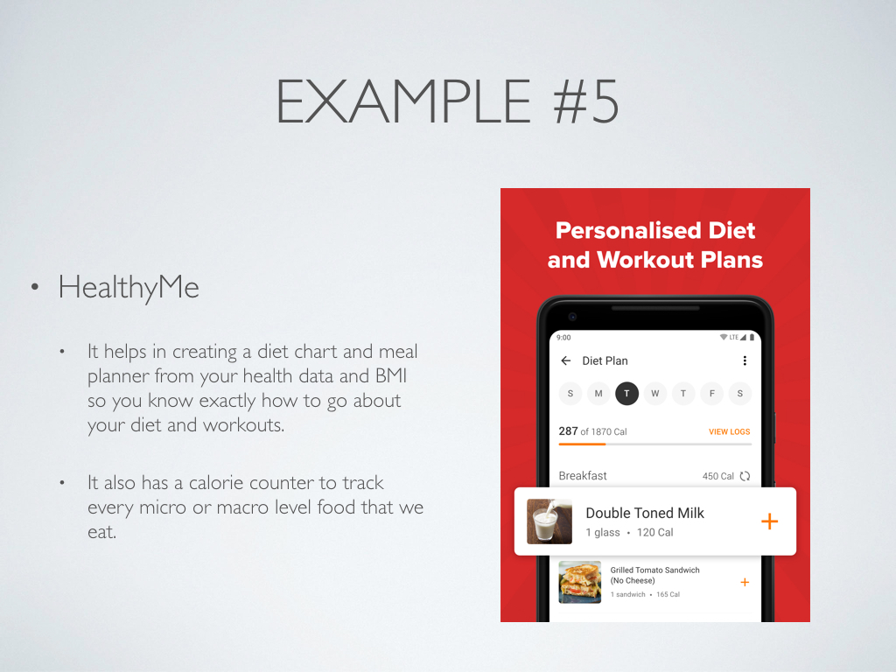

- Scans barcode and tells the calories/nutrition in that item
- Calories intake by a measured amount
- Tracks the number of steps you take every day
- Exercises focused on a particular region
- Availability of healthy recipes
- Suggest shops or products that have fewer calories
- Motivational videos
- Specific disease related diet plans
- Water & medicine reminders
- Adding friends and competing with them
- Goal setting
- To keep a track of how many steps were walked in a day
- To provide healthy recipe options for different times of the day like breakfast, lunch, snacks, etc
- Scans barcode and tells the calories/nutrition in a packaged food item
- To provide an option for exercises for a specific body part based on the level of user
- Plan > Track > Achieve: To let user set goals, track them and achieve
Design
Wireframing
- 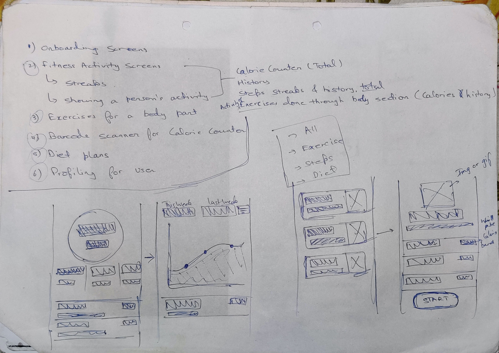
- 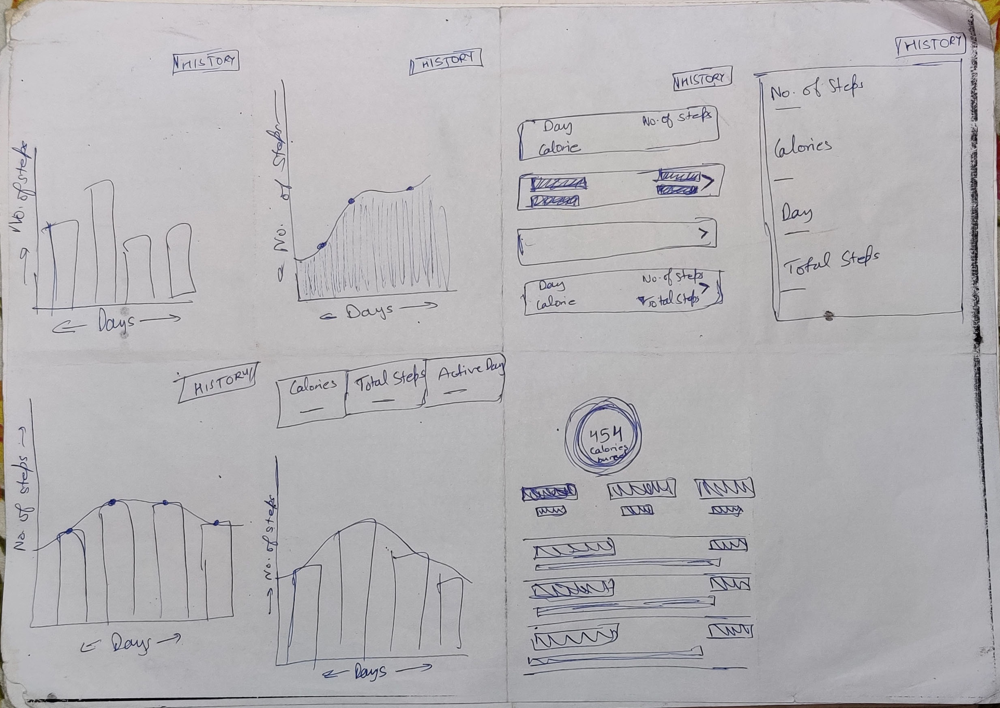
- 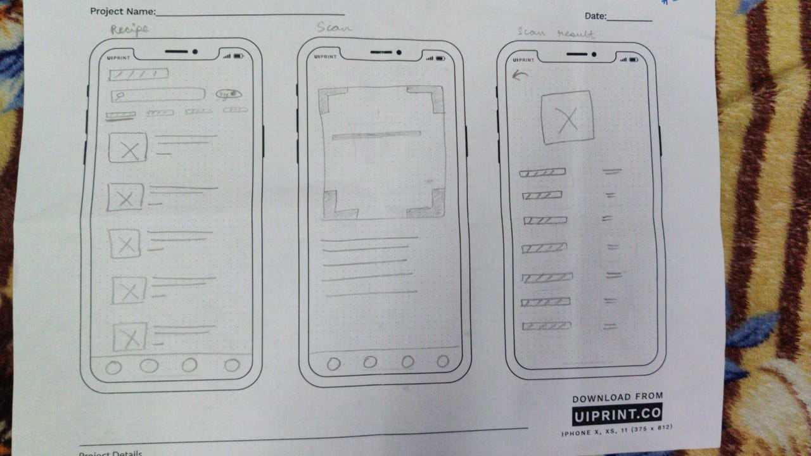
- 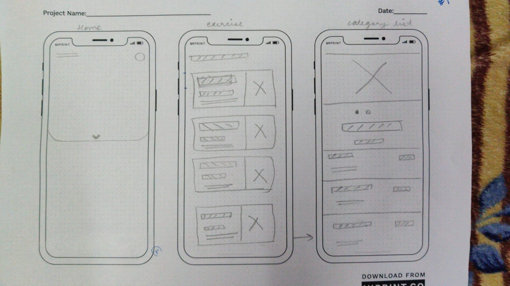
Visuals
-
A step by step carousel like listing informing the user that how the product will help you to track and make healthy lifestyle choices.
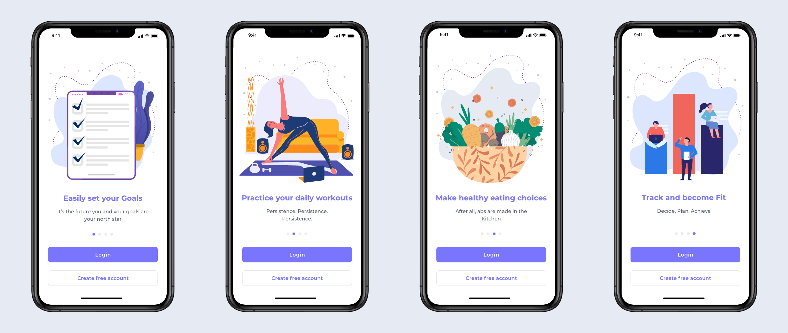 -
Standard login and signup form with quick signup/login with Google and Facebook is provided which will enhance user registration metric.
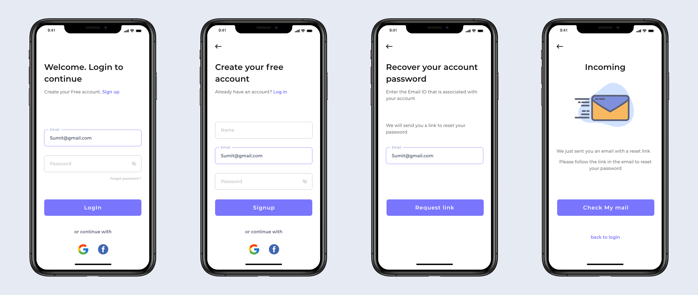 -
All the features are accessible from the home page itself. User can view diet, workout can scan barcodes and check their activity.
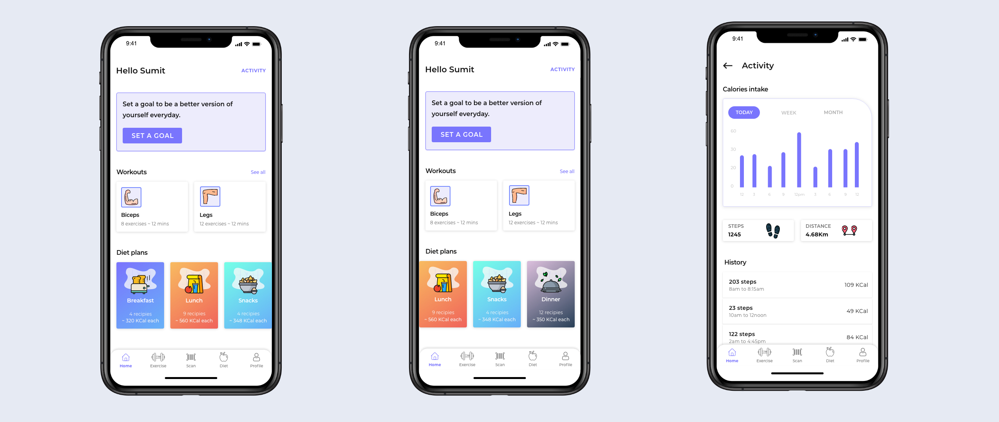 -
The USP of this App. Using this feature users can set the goals that they want to achieve by typing in their details like- age, weight, height, gender.
We are starting with predefined goals for now and these goals can be tracked easily by the activity tracker and users can see their progress themselves. The user can view their steps walked, calories intake and the distance on a daily, weekly, and monthly basis.
They will get their diet and exercise routine set according to their goal.
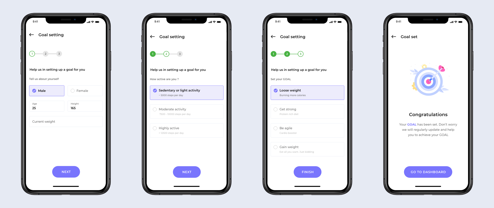 -
This 5–10 minutes exercise part is the result of limited time available to the user. The user is presented with carefully catalogued set of exercises that are short and targeted to a particular body part.
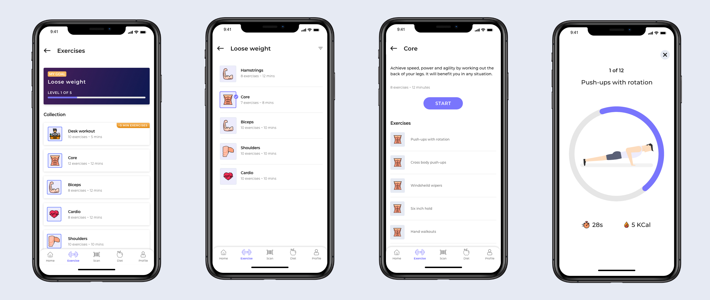 -
Recipes are Categorized by meals and with appropriate filters. User can choose from a available list of filters like: high calorie, high protein, calorie cautious, home-style, etc according to his/her requirement.
Veg/Non-veg with time and approx Calories are also mentioned for a better decision making.
Also, user would be able to see Goal oriented recipes once it is set.
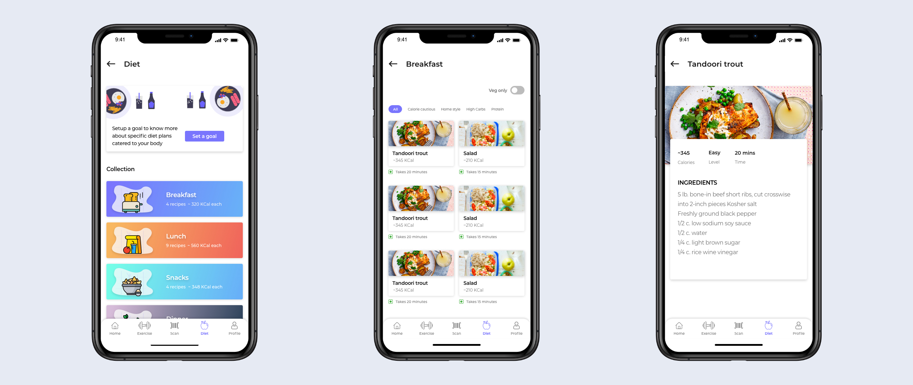 -
The barcode scanner lets the users scan the barcode of any packed item and tell the user various nutrients and minerals, proteins, fats, carbohydrates, etc. available in the product.
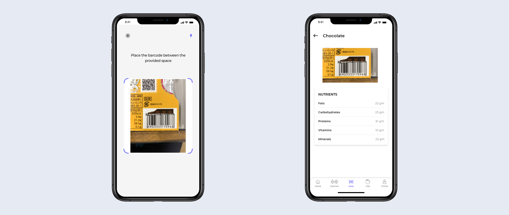
Reflection
The intended scope versus the real project scope: importance to have a focal point to start
Think big, but start small and focused, and expand the use cases based on the track. It will enable more efficient project management as well as more scalable design solutions. The initiation for this project is to explore design opportunities for an effective digital health product, but this intended scope is obviously too big to be executable.
When we started mental + physical health was our focus. But, down the line it was not possible to do justice to both.
I and my team mates did have some interesting thoughts on that too and will try to implement those.
- To be able to add custom goals
- Calendar tracking for exercise part
- To ab able to add scanned barcode directly to goal diet plan
- Meditation and yoga is to be included
- Competitive behavior and adding friends
And lastly I would like to thank each of my team mates for being the awesome people one could have.